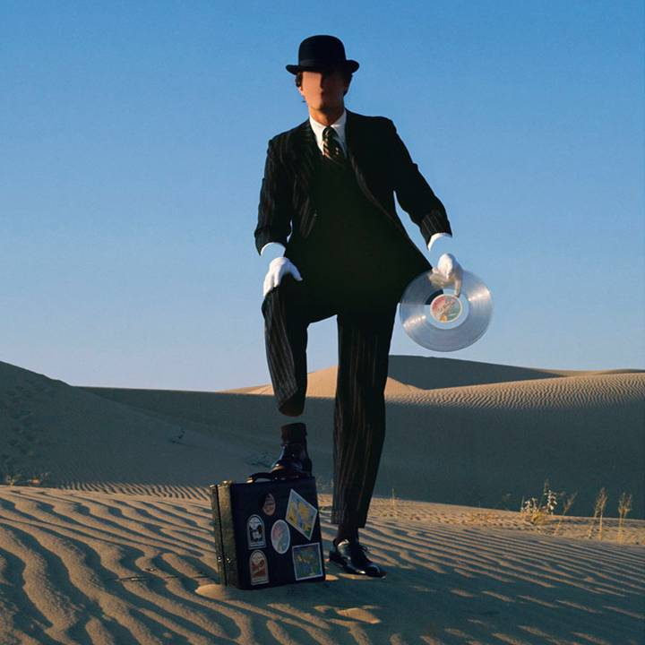

Wish You Were Here
Wydany: 12 września 1975 | Wytwórnia: Harvest Records
O albumie
"Wish You Were Here" to dziewiąty album studyjny Pink Floyd, wydany dwa i pół roku po monumentalnym sukcesie "The Dark Side of the Moon". Album jest hołdem dla Syd Barretta, założyciela zespołu, który opuścił grupę w 1968 roku z powodu problemów ze zdrowiem psychicznym spowodowanych nadużywaniem narkotyków.
Album eksploruje tematy nieobecności, zarówno fizycznej jak i emocjonalnej, oraz krytykuje przemysł muzyczny i jego wpływ na artystów. Muzyka łączy elementy progresywnego rocka, bluesa i muzyki ambient, tworząc atmosferyczne i emocjonalne dzieło, które wielu krytyków uważa za najlepszy album Pink Floyd.
Nagrywany w Abbey Road Studios między styczniem a lipcem 1975 roku, album wykorzystuje zaawansowane techniki studyjne, w tym syntezatory ARP i VCS3, efekty gitarowe oraz innowacyjne miksowanie. Produkcja była trudna – zespół zmagał się z presją sukcesu poprzedniego albumu i emocjonalnym ciężarem tematu Syd Barretta.
Ikoniczne okładki

Oryginalna okładka albumu
Zaprojektowana przez Storm Thorgerson i Hipgnosis, przedstawia dwóch biznesmenów ściskających sobie dłonie, z których jeden płonie. Symbolizuje to nieobecność prawdziwych emocji w świecie biznesu i fałsz przemysłu muzycznego.

Agent na pustyni
To outtake z sesji do „Wish You Were Here" (1975), powiązany z tylną okładką albumu. Przedstawia eleganckiego „agenta" na pustyni, sprzedającego „produkty" Pink Floyd — obraz krytyki przemysłu muzycznego i jego odczłowieczania. Fotografia: Storm Thorgerson / Hipgnosis.
Lista utworów
| Nr. | Tytuł | Długość | Opis |
|---|---|---|---|
| 1. | Shine On You Crazy Diamond (Parts I–V) | 13:31 | Epicki hołd dla Syd Barretta, pełen emocji i nostalgii |
| 2. | Welcome to the Machine | 7:31 | Krytyka przemysłu muzycznego i jego mechanizmów |
| 3. | Have a Cigar | 5:08 | Satyryczny utwór o chciwych producentach muzycznych (wokal: Roy Harper) |
| 4. | Wish You Were Here | 5:34 | Tytułowy utwór, intymna ballada o stracie i tęsknocie |
| 5. | Shine On You Crazy Diamond (Parts VI–IX) | 12:31 | Kontynuacja i zakończenie hołdu dla Syd Barretta |
Całkowity czas trwania: 44:28
Osiągnięcia i wyróżnienia
Sprzedaż
Ponad 20 milionów sprzedanych kopii na całym świecie
Billboard 200
Miejsce #1 w USA, pozostał na liście przez 84 tygodnie
Certyfikaty USA
7× Platyna (RIAA)
Certyfikaty UK
3× Platyna (BPI)
Rolling Stone
Miejsce w rankingu 500 Greatest Albums of All Time
Oceny krytyków
Uznawany za jeden z najlepszych albumów progresywnych wszech czasów
Historia powstania i Syd Barrett
Podczas nagrywania albumu wydarzyło się coś, co na zawsze pozostało w pamięci członków zespołu. Syd Barrett niespodziewanie pojawił się w Abbey Road Studios 5 czerwca 1975 roku, podczas sesji nagraniowej "Shine On You Crazy Diamond" – utworu napisanego właśnie o nim.
Barrett był nierozpoznawalny – przytył, ogolił głowę i brwi. Członkowie zespołu byli wstrząśnięci jego wyglądem i stanem psychicznym. Roger Waters podobno płakał na jego widok. To spotkanie pogłębiło emocjonalny ciężar albumu i uczyniło go jeszcze bardziej osobistym.
David Gilmour później wspominał: "To było bardzo smutne. Syd był duchem w maszynie, kimś, kto był z nami, ale jednocześnie go nie było. Ten album jest o nieobecności – nieobecności Syda, nieobecności prawdziwych emocji w przemyśle muzycznym, nieobecności człowieczeństwa."
Analiza kluczowych utworów
Shine On You Crazy Diamond
Podzielony na dwie części (I-V i VI-IX), ten 26-minutowy epos jest sercem albumu. Utwór rozpoczyna się czterominutowym intro z syntezatora, które buduje atmosferę nostalgii i straty.
Gitarowe solo Davida Gilmoura uważane jest za jedno z najpiękniejszych w historii rocka – pełne emocji, melodyjne i przejmujące. Rick Wright dodał: "To było jak pożegnanie z przyjacielem, który odszedł, ale którego nigdy nie zapomnimy."
Wish You Were Here
Tytułowy utwór to akustyczna ballada, która stała się jednym z najbardziej rozpoznawalnych utworów Pink Floyd. Prosta, ale głęboko poruszająca melodia i tekst o tęsknocie za kimś nieobecnym rezonują z słuchaczami na całym świecie.
Utwór rozpoczyna się od dźwięku radia przełączającego stacje, co symbolizuje poszukiwanie połączenia z kimś odległym. Gilmour nagrał gitarę akustyczną przez głośnik Leslie, co nadało jej charakterystyczne, ciepłe brzmienie.
Welcome to the Machine
Ten mroczny, syntezatorowy utwór jest ostrą krytyką przemysłu muzycznego. Tekst opisuje młodego muzyka wchodzącego do "maszyny" przemysłu rozrywkowego, która ostatecznie go pochłonie i zniszczy jego artystyczną integralność.
Roger Waters użył syntezatora VCS3 do stworzenia mechanicznych, nieludzkich dźwięków, które reprezentują "maszynę". Utwór był również jednym z pierwszych, do którego stworzono zaawansowany teledysk z animacją komputerową.
Ciekawostki
- Album był nagrywany w Abbey Road Studios na tych samych konsolach, których używali The Beatles
- Wokal w "Have a Cigar" wykonał Roy Harper, ponieważ żaden członek zespołu nie chciał śpiewać tego utworu
- Okładka z płonącym biznesmenem wymagała 15 dubli – kaskader był chroniony specjalnym żelem i miał tylko 15 sekund na ujęcie
- Album był pakowany w czarną, nieprzezroczystą folię, co było nowością w tamtych czasach
- Wszystkie fotografie do okładki zostały wykonane przez Aubrey'a "Po" Powella z Hipgnosis
- David Gilmour użył gitary Fender Stratocaster "Black Strat", która stała się jego charakterystycznym instrumentem
- Album został zremasterowany w 2011 roku przez Jamesa Guthrie, z dodatkowymi materiałami i miksami
- W 2012 roku ukazała się wersja "Immersion Box Set" z 5 dyskami zawierającymi demo, koncerty i dokumenty
Wpływ kulturowy i dziedzictwo
"Wish You Were Here" udowodnił, że Pink Floyd nie był zespołem jednego albumu. Po ogromnym sukcesie "The Dark Side of the Moon", zespół mógł spocząć na laurach, ale zamiast tego stworzył dzieło jeszcze bardziej osobiste i artystycznie ambitne.
Album wpłynął na całe pokolenia muzyków progresywnych i alternatywnych. Jego szczerość emocjonalna, połączona z wirtuozerią muzyczną, pokazała, że muzyka rockowa może być zarówno dostępna, jak i głęboko artystyczna. Tytułowy utwór stał się hymnem dla wszystkich, którzy doświadczyli straty lub tęsknoty.
Do dziś "Wish You Were Here" jest uważany przez wielu fanów i krytyków za najlepszy album Pink Floyd. Jego przesłanie o autentyczności, stracie i ludzkiej kondycji pozostaje uniwersalne i ponadczasowe. Album przypomina nas, że prawdziwa sztuka pochodzi z serca, nie z "maszyny".